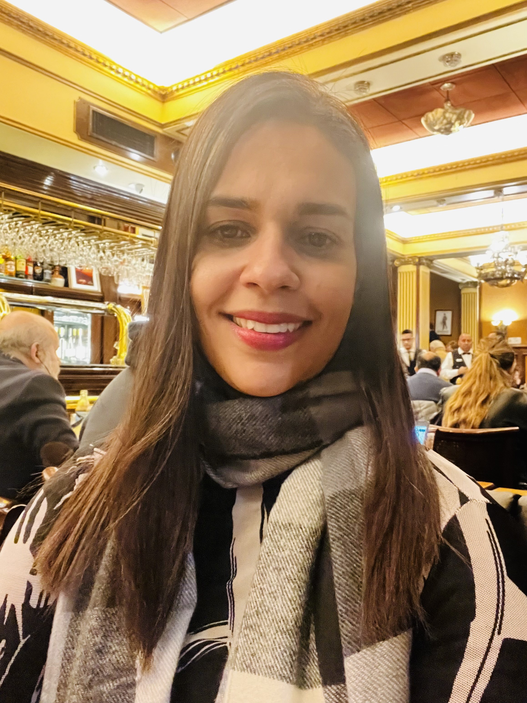

LucIAnalista
Uma escuta simbólica e analítica. Criada por Luciana Oliveira
LucIAnalista oferece uma escuta reflexiva sobre vínculos, solidão e padrões afetivos. Uma presença de palavra que acolhe e provoca, sem dar instruções práticas ou substituir terapia.
Conversar com LucIAnalista1
Abrir a conversa
Abrir a conversa
2
Escrever o que traz
Escrever o que traz
3
Refletir e, se quiser, levar à sessão
Refletir e, se quiser, levar à sessão
Aviso importante: LucIAnalista não fornece diagnóstico, orientações médicas, nutricionais ou terapêuticas. Não substitui acompanhamento clínico.
Em caso de risco ou crise: procure ajuda imediata. No Brasil, o CVV atende 24h pelo 188.
Privacidade: as conversas são privadas. A criadora não acessa o conteúdo das conversas deste link.